산업안전산업기사 (2016-03-06 기출문제)
1과목: 산업안전관리론
1. 연간 총 근로시간 중에 발생하는 근로손실일수를 1000시간 당 발생하는 근로손실일수로 나타내는 식은?
- 강도율
- 도수율
- 연천인율
- 종합재해지수
(정답률: 68%)

2. 재해원인을 직접원인과 간접원인으로 나눌 때, 직접원인에 해당하는 것은?
- 기술적 원인
- 관리적 원인
- 교육적 원인
- 물적 원인
(정답률: 92%)
3. TBM(Tool Box Meeting)의 의미를 가장 잘 설명한 것은?
- 지시나 명령의 전달회의
- 공구함을 준비한 후 작업하라는 뜻
- 작업원 전원의 상호대화로 스스로 생각하고 납득하는 작업장 안전회의
- 상사의 지시된 작업내용에 따른 공구를 하나하나준비해야 한다는 뜻
(정답률: 85%)
4. 교육 대상자수가 많고, 교육 대상자의 학습능력의 차이가 큰 경우 집단안전 교육방법으로서 가장 효과적인 방법은?
- 문답식 교육
- 토의식 교육
- 시청각 교육
- 상담식 교육
(정답률: 88%)
5. 일선 관리감독자를 대상으로, 작업지도기법, 작업개선기법, 인간관계 관리기법 등을 교육하는 방법은?
- ATT(American Telephone & Telegram Co.)
- MTP(Management Training Program)
- CCS(Civil Communication Section)
- TWI(Training Within Industry)
(정답률: 86%)
6. 교육훈련의 효과는 5관을 최대한 활용하여야 하는데 다음 중 효과가 가장 큰 것은?
- 청각
- 시각
- 촉각
- 후각
(정답률: 84%)
7. 산업안전보건법상 바탕은 흰색, 기본모형은 빨간색, 관련 부호 및 그림은 검은색을 사용하는 안전ㆍ보건표지는?
- 안전복착용
- 출입금지
- 고온경고
- 비상구
(정답률: 77%)
8. 성공적인 리더가 갖추어야 할 특성으로 가장 거리가 먼 것은?
- 강한 출세 욕구
- 강력한 조직 능력
- 미래지향적 사고 능력
- 상사에 대한 부정적인 태도
(정답률: 90%)
9. 산업안전보건법상 아세틸렌 용접장치 또는 가스집한 용접장치를 사용하여 행하는 금속의 용접ㆍ용단 또는 가열작업자에게 특별안전ㆍ보건교육을 시키고자 할 때의 교육 내용이 아닌 것은?
- 용접흄ㆍ분진 및 유해광선 등의 유해성에 관한 사항
- 작업방법ㆍ작업순서 및 응급처지에 관한 사항
- 안전밸브의 취급 및 주의에 관한 사항
- 안전기 및 보호구 취급에 관한 사항
(정답률: 61%)
10. 다음 ( )안에 알맞은 것은?
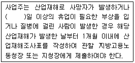
- 3
- 4
- 5
- 7
(정답률: 74%)
11. 안전관리에 관한 계획에서 실시에 이르기까지 모든 권한이 포괄적이며 하향적으로 행사되며, 전문 안전담당 부서가 없는 안전관리조직은?
- 직계식 조직
- 참모식 조직
- 직계-참모식 조직
- 안전보건 조직
(정답률: 79%)
12. 매슬로우(A.H.Maslow)의 안전욕구 5단계 이론에서 각단계별 내용이 잘못 연결된 것은?
- 1단계 : 자아실현의 욕구
- 2단계 : 안전에 대한 욕구
- 3단계 : 사회적 욕구
- 4단계 : 존경에 대한 욕구
(정답률: 88%)
13. 피로의 예방과 회복대책에 대한 설명이 아닌 것은?
- 작업부하를 크게 할 것
- 정적 동작을 피할 것
- 작업속도를 적절하게 할 것
- 근로시간과 휴식을 적정하게 할 것
(정답률: 92%)
14. 다음과 같은 착시현상에 해당하는 것은?
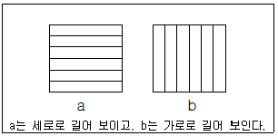
- 뮬러-라이어(Müller-Lyer)의 착시
- 헬호츠(Helmholz)의 착시
- 헤링(Hering)의 착시
- 포겐도프(Poggendorf)의 착시
(정답률: 64%)
15. 산업안전보건법상 중대재해에 해당하지 않는 것은?
- 추락으로 인하여 1명이 사망한 재해
- 건물의 붕괴로 인하여 15명의 부상자가 동시에 발생한 재해
- 화재로 인하여 4개월의 요양이 필요한 부상자가 동시에 3명 발생한 재해
- 근로환경으로 인하여 작업성질병자가 동시에 5명 발생한 재해
(정답률: 81%)
16. 방독마스크의 흡수관의 종류와 사용조건이 옳게 연결된 것은?
- 보통가스용 - 산화금속
- 유기가스용 - 활성탄
- 일산화탄소용 - 알칼리제제
- 암모니아용 - 산화금속
(정답률: 65%)
17. 하버드 학파의 5단계 교수법에 해당되지 않는 것은?
- 교시(Presentation)
- 연합(Association)
- 추론(Reasoning)
- 총괄(Generalization)
(정답률: 82%)
18. 산업안전보건법상 프레스 작업 시 작업시작 전 점검사항에 해당하지 않는 것은?
- 클러치 및 브레이크의 기능
- 매니퓰레이터(manipulator) 작동의 이상 유무
- 프레스의 금형 및 고정볼트 상태
- 1행정 1정지기구ㆍ급정지장치 및 비상정지 장치의 기능
(정답률: 77%)
19. 레빈(Lewin)의 법칙 중 환경조건(E)이 의미하는 것은?
- 지능
- 소질
- 적성
- 인간관계
(정답률: 89%)
20. 재해손실 코스트 방식 중 하인리히의 방식에 있어 1:4의 원칙 중 1에 해당하지 않는 것은?
- 재해예방을 위한 교육비
- 치료비
- 재해자에게 지급된 급료
- 재해보상 보험금
(정답률: 72%)
2과목: 인간공학 및 시스템안전공학
21. 음량 수준이 50phon일 때 sone 값은?
- 2
- 5
- 10
- 100
(정답률: 70%)
22. 청각적 표시장치 지침에 관한 설명으로 틀린 것은?
- 신호는 최소한 0.5~1초 동안 지속한다.
- 신호는 배경소음과 다른 주파수를 이용한다.
- 소음은 양쪽 귀에, 신호는 한쪽 귀에 들리게 한다.
- 300m 이상 멀리 보내는 신호는 2000Hz 이상의 주파수를 사용한다.
(정답률: 74%)
23. 인체측정치를 이용한 설계에 관한 설명으로 옳은 것은?
- 평균치를 기준으로 한 설계를 제일 먼저 고려한다.
- 자세와 동작에 따라 고려해야 할 인체측정 치수가 달라진다.
- 의자의 깊이와 너비는 작은 사람을 기준으로 설계한다.
- 큰 사람을 기준으로 한 설계는 인체측정치의 5%tile을 사용한다.
(정답률: 78%)
24. 인간-기계 시스템 설계 과정의 주요 6단계를 올바른 순서로 나열한 것은?
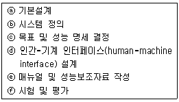
- ⓒ → ⓑ → ⓐ → ⓓ → ⓔ → ⓕ
- ⓐ → ⓑ → ⓒ → ⓓ → ⓔ → ⓕ
- ⓑ → ⓒ → ⓐ → ⓔ → ⓓ → ⓕ
- ⓒ → ⓐ → ⓑ → ⓔ → ⓓ → ⓕ
(정답률: 70%)
25. 동전던지기에 앞면이 나올 확률이 0.7이고, 뒷면이 나올 확률이 0.3일 때, 앞면이 나올 사건의 정보량(A)과 뒷면이 나올 사건의 정보량(B)은 각각 얼마인가?
- A : 0.88bit, B : 1.74bit
- A : 0.51bit, B : 1.74bit
- A : 0.88bit, B : 2.25bit
- A : 0.51bit, B : 2.25bit
(정답률: 63%)
26. 고온 작업자의 고온 스트레스로 인해 발생하는 생리적 영향이 아닌 것은?(관련 규정 개정전 문제로 여기서는 기존 정답인 4번을 누르면 정답 처리됩니다. 자세한 내용은 해설을 참고하세요.)
- 피부와 직장온도의 상승
- 발한(sweating)의 증가
- 심박출량(cardiac output)의 증가
- 근육에서의 젖산 감소로 인한 근육통과 근육피로 증가
(정답률: 84%)
27. FMEA의 위험성 분류 중 “카테고리 2”에 해당 되는 것은?
- 영향 없음
- 활동의 지연
- 사명 수행의 실패
- 생명 또는 가옥의 상실
(정답률: 51%)
28. 다음 중 일반적으로 가장 신뢰도가 높은 시스템의 구조는?
- 직렬연결구조
- 병렬연결구조
- 단일부품구조
- 직ㆍ병렬 혼합구조
(정답률: 79%)
29. 중량물을 반복적으로 드는 작업의 부하를 평가하기 위한 방법이 NIOSH 들기지수를 적용할 때 고려되지 않는 항목은?
- 들기빈도
- 수평이동거리
- 손잡이 조건
- 허리 비틀림
(정답률: 64%)
30. 작업자가 소음 작업환경에 장기간 노출되어 소음성 난청이 발병하였다면 일반적으로 청력 손실이 가장 크게 나타나는 주파수는?
- 1000Hz
- 2000Hz
- 4000Hz
- 6000Hz
(정답률: 66%)
31. 다음 중 시스템 안전성 평가의 순서를 가장 올바르게 나열한 것은?
- 자료의 정리 → 정량적 평가 → 정성적 평가 → 대책 수립 → 재평가
- 자료의 정리 → 정성적 평가 → 정량적 평가 → 재평가 → 대책 수립
- 자료의 정리 → 정량적 평가 → 정성적 평가 → 재평가 → 대책 수립
- 자료의 정리 → 정성적 평가 → 정량적 평가 → 대책 수립 → 재평가
(정답률: 69%)
32. 결함수분석법에 있어 정상사상(top event)이 발생하지 않게 하는 기본사상들의 집합을 무엇이라고 하는가?
- 컷셋(cut set)
- 페일셋(fail set)
- 트루셋(truth set)
- 패스셋(path set)
(정답률: 67%)
33. FT도에 사용되는 논리기호 중 AND 게이트에 해당하는 것은?
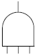
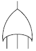
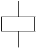
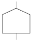
(정답률: 85%)
34. 조정반응비율(C/R비)에 관한 설명으로 틀린 것은?
- 조종장치와 표시장치의 물리적 크기와 성질에 따라 달라진다.
- 표시장치의 이동거리를 조종장치의 이동거리로 나눈 값이다.
- 조종반응비율이 낮다는 것은 민감도가 높다는 의미이다.
- 최적의 조종반응비율은 조종장치의 조종시간과 표시 장치의 이동시간이 교차하는 값이다.
(정답률: 54%)
35. 페일 세이프(fail-safe)의 원리에 해당되지 않는 것은?
- 교대 구조
- 다경로하중 구조
- 배타설계 구조
- 하중경감 구조
(정답률: 49%)
36. 옥내 조명에서 최적 반사율의 크기가 작은 것부터 큰 순서대로 나열된 것은?
- 벽 < 천장 < 가구 < 바닥
- 바닥 < 가구 < 천장 < 벽
- 가구 < 바닥 < 천장 < 벽
- 바닥 < 가구 < 벽 < 천장
(정답률: 82%)
37. 관측하고자 하는 측정값을 가장 정확하게 읽을 수 있는 표시장치는?
- 계수형
- 동침형
- 동목형
- 묘사형
(정답률: 70%)
38. 그림의 FT도에서 최소 컷셋(minimal cet set)으로 옳은 것은?
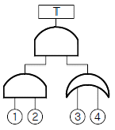
- {1, 2, 3, 4}
- {1, 2, 3}, {1, 2, 4}
- {1, 3, 4}, {2, 3, 4}
- {1, 3}, {1, 4}, {2, 3}, {2, 4}
(정답률: 69%)
39. 설비의 보전과 가동에 있어 시스템의 고장과 고장 사이의 시간 간격을 의미하는 용어는?
- MTTR
- MDT
- MTBF
- MTBR
(정답률: 57%)
40. 에너지대사율(Relative Metabolic Rate)에 관한 설명으로 틀린 것은?
- 작업대사량은 작업 시 소비에너지와 안정 시소비에너지의 차로 나타낸다.
- RMR은 작업대사량을 기초대사량으로 나눈 값이다.
- 산소소비량을 측정할 때 더글라스백(Douglas bag)을 이용한다.
- 기초대사량은 의자에 앉아서 호흡하는 동안에 측정한 산소소비량으로 구한다.
(정답률: 69%)
3과목: 기계위험방지기술
41. 운전자가 서서 조작하는 방식의 지게차의 경우 운전석의 바닥면에서 헤드가드의 상부틀의 하면까지의 높이가 몇 m 이상이 되어야 하는가?(관련 규정 개정전 문제로 여기서는 기존 정답인 4번을 누르면 정답 처리됩니다. 자세한 내용은 해설을 참고하세요.)
- 0.3
- 0.5
- 1.0
- 2.0
(정답률: 83%)
42. 프레스에 적용되는 방호장치의 유형이 아닌 것은?
- 접근거부형
- 접근반응형
- 위치제한형
- 포집형
(정답률: 76%)
43. 롤러기 방호장치의 무부하 동작시험 시 앞면 롤러의 지름이 150mm 이고, 회전수가 30rpm인 롤러기의 급정지거리는 몇 mm 이내어야 하는가?
- 157
- 188
- 207
- 237
(정답률: 49%)
44. 기계나 그 부품에 고장이나 기능 불량이 생겨도 항상 안전하게 작동하는 안전화 대책은?
- 진단
- 예방정비
- 페일 세이프(fail safe)
- 풀 프루프(fool proof)
(정답률: 81%)
45. 아세틸렌 용접장치의 발생기실을 옥외에 설치하는 경우에는 그 개구부는 다른 건축물로부터 몇 m 이상 떨어져야 하는가?
- 1
- 1.5
- 2.5
- 3
(정답률: 55%)
46. 위험한 작업점과 작업자 사이에 서로 접근되어 일어날 수 있는 재해를 방지하는 격리형 방호장치가 아닌 것은?
- 완전 차단형 방호장치
- 덮개형 방호장치
- 안전 방책
- 양수조작식 방호장치
(정답률: 63%)
47. 밀링머신(milling machine)의 작업 시 안전수칙에 대한 설명으로 틀린 것은?
- 커터의 교환 시는 테이블 위에 목재를 받쳐 놓는다.
- 강력절삭 시에는 일감을 바이스에 깊게 물린다.
- 작업 중 면장갑은 끼지 않는다.
- 커터는 가능한 칼럼(column)으로부터 멀리 설치한다.
(정답률: 77%)
48. 공기압축기의 작업시작 전 점검사항이 아닌 것은?
- 윤활유의 상태
- 언로드 밸브의 기능
- 비상정지장치의 기능
- 압력방출장치의 기능
(정답률: 46%)
49. 불순물이 포함된 물을 보일러 수로 사용하여 보일러의 관벽과 드럼 내면에 발생한 관석(Scale)으로 인한 영향이 아닌 것은?
- 과열
- 불완전 연소
- 보일러의 효율 저하
- 보일러 수의 순환 저하
(정답률: 60%)
50. 프레스 광전자식 방호장치의 광선에 신체의 일부가 감지된 후로부터 급정지기구 작동 시까지의 시간이 30ms이고, 급정지기구의 작동 직후로부터 프레스기가 정지될 때까지의 시간이 20ms라면 광축의 최소 설치거리는?
- 75mm
- 80mm
- 100mm
- 150mm
(정답률: 60%)
51. 프레스 방호장치의 공통일반구조에 대한 설명으로 틀린 것은?
- 방호장치의 표면은 벗겨짐 현상이 없어야 하며, 날카로운 모서리 등이 없어야 한다.
- 위험기계ㆍ기구 등에 장착이 용이하고 견고하게 고정될 수 있어야 한다.
- 외부충격으로부터 방호장치의 성능이 유지될 수 있도록 보호덮개가 설치되어야 한다.
- 각종 스위치, 표시램프는 돌출형으로 쉽게 근로자가 볼 수 있는 곳에 설치해야 한다.
(정답률: 79%)
52. 소성가공의 종류가 아닌 것은?
- 단조
- 압연
- 인발
- 연삭
(정답률: 59%)
53. 풀 푸르프(fool proof)에 해당되지 않는 것은?
- 각종 기구의 인터록 기구
- 크레인의 권과방지장치
- 카메라의 이중 촬영 방지기구
- 항공기의 엔진
(정답률: 74%)
54. 산업안전보건법상 양중기가 아닌 것은?(관련 규정 개정전 문제로 여기서는 기존 정답인 3번을 누르면 정답 처리됩니다. 자세한 내용은 해설을 참고하세요.)
- 곤돌라
- 이동식 크레인
- 최대하중이 0.2톤인 승강기
- 적재하중이 0.1톤 인 이삿짐 운반용 리프트
(정답률: 76%)
55. 컨베이어의 종류가 아닌 것은?
- 체인 컨베이어
- 스크류 컨베이어
- 슬라이딩 컨베이어
- 유체 컨베이어
(정답률: 66%)
56. 그림과 같은 지게차에서 W를 화물중량, G를 지게차 자체 중량, a를 앞바퀴 중심부터 화물의 중심까지의 최단거리, b를 앞바퀴 중심에서 지게차의 중심까지의 최단거리라고 할 때 지게차 안정조건은?
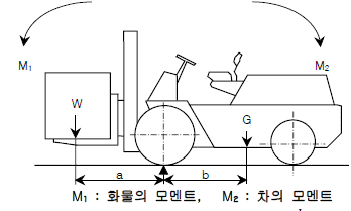
- W⋅a < G⋅b
- W-1 < G⋅(b/a)
- W⋅a < G⋅(b-1)
- W > G⋅(b/a)
(정답률: 81%)
57. 기계설비의 안전조건에서 구조적 안전화로 틀린 것은?
- 가공결함
- 재료의 결함
- 설계상의 결함
- 방호장치의 작동결함
(정답률: 56%)
58. 프레스 금형의 설치 및 조정 시 슬라이드 불시하강을 방지하기 위하여 설치해야 하는 것은?
- 인터록
- 클러치
- 게이트 가드
- 안전블럭
(정답률: 81%)
59. 연삭기 덮개에 관한 설명으로 틀린 것은?
- 탁상용 연삭기의 워크레스트는 연삭숫돌과의 간격을 3mm 이하로 조정할 수 있는 구조이어야 한다.
- 연삭숫돌의 상부를 사용하는 것을 목적으로 하는 탁상용 연삭기의 덮개의 노출 각도는 90° 이내로 제한하고 있다.
- 덮개의 두께는 연삭숫돌의 최고사용속도, 연삭숫돌의 두께 및 직경에 따라 달라진다.
- 덮개 재료는 인장강도 274.5MPa 이상이고 신장도가 14% 이상이어야 한다.
(정답률: 68%)
60. 연강의 인장강도가 420MPa이고, 허용응력이 140MPa 이라면, 인장율은?
- 0.3
- 0.4
- 3
- 4
(정답률: 76%)
4과목: 전기 및 화학설비위험방지기술
61. 저압 전로의 사용전압이 220V인 경우 절연저항 값은 몇 MΩ 이상이어야 하는가?(관련 규정 개정전 문제로 여기서는 기존 정답인 2번을 누르면 정답 처리됩니다. 자세한 내용은 해설을 참고하세요.)
- 0.1
- 0.2
- 0.3
- 0.4
(정답률: 75%)
62. 저항 값이 0.1Ω인 도체에 10A의 전류가 1분간 흘렀을 경우 발생하는 열량은 몇 cal 인가?
- 124
- 144
- 166
- 250
(정답률: 70%)
63. 전류밀도, 통전전류, 접촉면적과 피부저항과의 관계를 올바르게 설명한 것은?
- 전류밀도와 통전전류는 반비례 관계이다.
- 통전전류와 접촉면적에 관계없이 피부저항은 항상 일정하다.
- 같은 크기의 통전전류가 흘러도 접촉면적이 커지면 전류밀도는 커진다.
- 같은 크기의 통전전류가 흘러도 접촉면적이 커지면 피부저항은 작게 된다.
(정답률: 53%)
64. 다음과 같은 특성이 있으며 제한전압이 낮기 때문에 접지저항을 낮게 하기 어려운 배전선로에 적합한 피뢰기는?
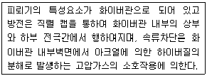
- 변형 피뢰기
- 방출형 피뢰기
- 갭레스형 피뢰기
- 변저항형 피뢰기
(정답률: 59%)
65. 전기불꽃이나 과열에 대하서 회로특성상 폭발의 위험을 방지할 수 있는 방폭구조는?
- 내압 방폭구조
- 유입 방폭구조
- 안전증 방폭구조
- 압력 방폭구조
(정답률: 62%)
66. 사람이 전기에 접촉하는 경우에는 접촉하는 상태에 따라 인체저항과 통전전류가 달라지므로 인체의 접촉상태에 따라 접촉전압을 제한할 필요가 있다. 다음의 경우 일반 허용접촉전압으로 옳은 것은?
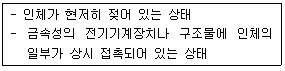
- 2.5V 이하
- 25V 이하
- 50V 이하
- 제한 없음
(정답률: 74%)
67. 정전기 방전의 종류 중 부도체의 표면을 따라서 star-check 마크를 가지는 나뭇가지 형태의 발광을 수반하는 것은?
- 기중방전
- 불꽃방전
- 연면방전
- 고압방전
(정답률: 56%)
68. 인화성 액체의 증기 또는 가연성 가스에 의한 가스폭발 위험장소의 분류에 해당되지 않는 것은?
- 0종 장소
- 1종 장소
- 2종 장소
- 3종 장소
(정답률: 76%)
69. 전기기계ㆍ기구의 누전에 의한 감전위험을 방지하기 위하여 해당 전로에는 정격에 적합하고 감도가 양호한 감전방지용 누전차단기를 설치하여야 한다. 이 누전차단기의 기준은 정격감도 전류가 30mA 이하이고 작동시간은 몇 초 이내 이어야 하는가? (단, 정격부하전류가 50A 미만의 전기기계ㆍ기구에 접속되는 누전 차단기이다.)
- 0.03초
- 0.1초
- 0.3초
- 0.5초
(정답률: 68%)
70. 유류저장 탱크에서 배관을 통해 드럼으로 기름을 이송하고 있다. 이 때 유동전류에 의한 정전대전 및 정전기 방전에 의한 피해를 방지하기 위한 조치와 관련이 먼 것은?
- 유체가 흘러가는 배관을 접지시킨다.
- 배관 내 유류의 유속은 가능한 느리게 한다.
- 유류저장 탱크와 배관, 드럼 간에 본딩(Bonding)을 시킨다.
- 유류를 취급하고 있으므로 화기 등을 가까이 하지 않도록 점화원 관리를 한다.
(정답률: 42%)
71. 소화방법에 대한 주된 소화원리로 틀린 것은?
- 물을 살포한다. : 냉각소화
- 모래를 뿌린다. : 질식소화
- 초를 불어서 끈다. : 억제소화
- 담요를 덮는다. : 질식소화
(정답률: 75%)
72. 다음 중 절연성 액체를 운반하는 관에 있어서 정전기로 인한 화재 및 폭발을 예방하기 위한 방법으로 가장 거리가 먼 것은?
- 유속을 줄인다.
- 관을 접지시킨다.
- 도전성이 큰 재료의 관을 사용한다.
- 관의 안지름을 작게 한다.
(정답률: 75%)
73. 액체계의 과도한 상승 압력의 방출에 이용되고, 설정압력이 되었을 때 압력상승에 비례하여 서서히 개방되는 밸브는?
- 릴리프밸브
- 체크밸브
- 안전밸브
- 통기밸브
(정답률: 62%)
74. 산업안전보건기준에 관한 규칙에서 정한 위험물질 종류중 부식성 물질에서 부식성 염기류에 해당하는 것은?
- 농도 40% 이상인 염산
- 농도 40% 이상인 불산
- 농도 40% 이상인 아세트산
- 농도 40% 이상인 수산화칼륨
(정답률: 65%)
75. 다음 물질 중 가연성 가스가 아닌 것은?
- 수소
- 메탄
- 프로판
- 염소
(정답률: 72%)
76. 다음 가스 중 위험도가 가장 큰 것은?
- 수소
- 아세틸렌
- 프로판
- 암모니아
(정답률: 75%)
77. 물과의 접촉을 금지하여야 하는 물질은?
- 적린
- 칼륨
- 히드라진
- 니트로셀룰로오스
(정답률: 79%)
78. 다음 중 화학장치에서 반응기의 유해ㆍ위험요인(hazard)으로 화학반응이 있을 때 특히 유의해야 할 사항은?
- 낙하, 절단
- 감전, 협착
- 비래, 붕괴
- 반응폭주, 과압
(정답률: 80%)
79. 황린에 대한 설명으로 옳은 것은?
- 연소 시 인화수소가스를 발생한다.
- 황린은 자연발화하므로 물속에 보관한다.
- 황린은 황과 인의 화합물이다.
- 독성 및 부식성이 없다.
(정답률: 76%)
80. 최소점화에너지(MIE)와 온도, 압력의 관계를 옳게 설명한 것은?
- 압력, 온도에 모두 비례한다.
- 압력, 온도에 모두 반비례한다.
- 압력에 비례하고, 온도에 반비례한다.
- 압력에 반비례하고, 온도에 비례한다.
(정답률: 64%)
5과목: 건설안전기술
81. 다음 중 건설공사관리의 주요 기능이라 볼 수 없는 것은?
- 안전관리
- 공정관리
- 품질관리
- 재고관리
(정답률: 74%)
82. 사다리를 설치하여 사용함에 있어 사다리 지주 끝에 사용하는 미끄럼 방지재료로 적당하지 않은 것은?
- 고무
- 코르크
- 가죽
- 비닐
(정답률: 82%)
83. 공사종류 및 규모별 안전관리비 계상기준표에서 공사종류의 명칭에 해당되지 않는 것은?
- 철도ㆍ궤도신설공사
- 일반건설공사(병)
- 중건설공사
- 특수 및 기타건설공사
(정답률: 74%)
84. 안전난간의 구조 및 설치기준으로 옳지 않은 것은?
- 안전난간은 상부난간대, 중간난간대, 발끝막이판, 난간기둥으로 구성할 것
- 상부난간대와 중간난간대는 난간 길이 전체에 걸쳐 바닥면 등과 평행을 유지할 것
- 발끝막이판은 바닥면 등으로부터 10cm 이상의 높이를 유지할 것
- 안전난간은 구조적으로 가장 취약한 지점에서 가장 취약한 방향으로 작용하는 80kg 이상의 하중에 견딜 수 있는 튼튼한 구조일 것
(정답률: 79%)
85. 화물용 승강기를 설계하면서 와이어로프의 안전하중은 10ton 이라면 로프의 가닥수를 얼마로 하여야 하는가? (단, 와이어로프 한 가닥의 파단강도는 4ton이며, 화물용 승강기의 와이어로프의 안전율은 6으로 한다.)
- 10가닥
- 15가닥
- 20가닥
- 30가닥
(정답률: 63%)
86. 현장에서 가설통로의 설치 시 준수사항으로 옳지 않은 것은?
- 건설공사에 사용하는 높이 8m 이상인 비계다리에는10m 이내마다 계단참을 설치할 것
- 수직갱에 가설된 통로의 길이가 15m 이상인 때에는 10m 이내마다 계단참을 설치할 것
- 경사가 15°를 초과하는 때에는 미끄러지지 아니하는 구조로 할 것
- 경사는 30° 이하로 할 것
(정답률: 71%)
87. 철공공사의 용접, 용단작업에 사용되는 가스의 용기는 최대 몇 ℃ 이하로 보존해야 하는가?
- 25℃
- 36℃
- 40℃
- 48℃
(정답률: 64%)
88. 철골공사에서 기둥의 건립작업 시 앵커볼트를 매립할 때 요구되는 정밀도에서 기둥중심은 기준선 및 인접기둥의 중심으로부터 얼마 이상 벗어나지 않아야 하는가?
- 3mm
- 5mm
- 7mm
- 10mm
(정답률: 50%)
89. 철골 작업을 중지해야 할 강설량 기준으로 옳은 것은?
- 강설량이 시간당 1mm 이상인 경우
- 강설량이 시간당 5mm 이상인 경우
- 강설량이 시간당 1cm 이상인 경우
- 강설량이 시간당 5cm 이상인 경우
(정답률: 78%)
90. 다음은 지붕 위에서의 위험방지를 위한 내용이다. 빈칸에 알맞은 수치로 옳은 것은?
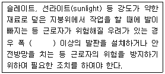
- 20cm
- 25cm
- 30cm
- 40cm
(정답률: 72%)
91. 추락재해를 방지하기 위하여 10cm 그물코인 방망을 설치할 때 방망과 바닥면 사이의 최소 높이로 옳은 것은? (단, 설치된 방망의 단변 방향 길이 L=2m, 장변방향 방망의 지지간격 A=3m 이다.)
- 2.0m
- 2.4m
- 3.0m
- 3.4m
(정답률: 43%)
92. 옥외에 설치되어 있는 주행크레인에 대하여 이탈방지장치를 작동시키는 등 이탈 방지를 위한 조치를 하여야 하는 순간 풍속 기준은?
- 초당 10m 초과
- 초당 20m 초과
- 초당 30m 초과
- 초당 40m 초과
(정답률: 58%)
93. 강재 거푸집과 비교한 합판 거푸집의 특성이 아닌 것은?
- 외기 온도의 영향이 적다.
- 녹이 슬지 않음으로 보관하기가 쉽다.
- 중량이 무겁다.
- 보수가 간단하다.
(정답률: 66%)
94. 이동식 사다리를 설치하여 사용하는 경우의 준수 기준으로 옳지 않은 것은?
- 길이가 6m를 초과해서는 안된다.
- 다리의 벌림은 벽 높이의 1/4 정도가 적당하다.
- 미끄럼방지 발판은 인조고무 등으로 마감한 실내용을 사용하여야 한다.
- 벽면 상부로부터 최소한 90cm 이상의 연장길이가 있어야 한다.
(정답률: 43%)
95. 다음은 작업으로 인하여 물체가 떨어지거나 날아올 위험이 있는 경우에 조치하여야 하는 사항이다. 빈 칸에 알맞은 내용으로 옳은 것은?
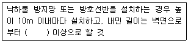
- 2m
- 2.5m
- 3m
- 3.5m
(정답률: 70%)
96. 철골조립 공사 중에 볼트작업을 하기 위해 주체인 철골에 매달아서 작업발판으로 이용하는 비계는?
- 달비계
- 말비계
- 달대비계
- 선반비계
(정답률: 51%)
97. 말뚝박기 해머(hammer)중 연약지반에 적합하고 상대적으로 소음이 적은 것은?
- 드롭 해머(drop hammer)
- 디젤 해머(diesel hammer)
- 스팀 해머(steam hammer)
- 바이브로 해머(vibro hammer)
(정답률: 63%)
98. 콘크리트의 양생 방법이 아닌 것은?
- 습윤 양생
- 건조 양생
- 증기 양생
- 전기 양생
(정답률: 43%)
99. 기계가 서 있는 지면보다 높은 곳을 파는 작업에 가장 적합한 굴착기계는?
- 파워셔블
- 드레그라인
- 백호우
- 클램쉘
(정답률: 62%)
100. 토석붕괴의 요인 중 외적 요인이 아닌 것은?
- 토석의 강도저하
- 사면, 법면의 경사 및 기울기의 증가
- 절토 및 성토 높이의 증가
- 공사에 의한 진동 및 반복하중의 증가
(정답률: 69%)